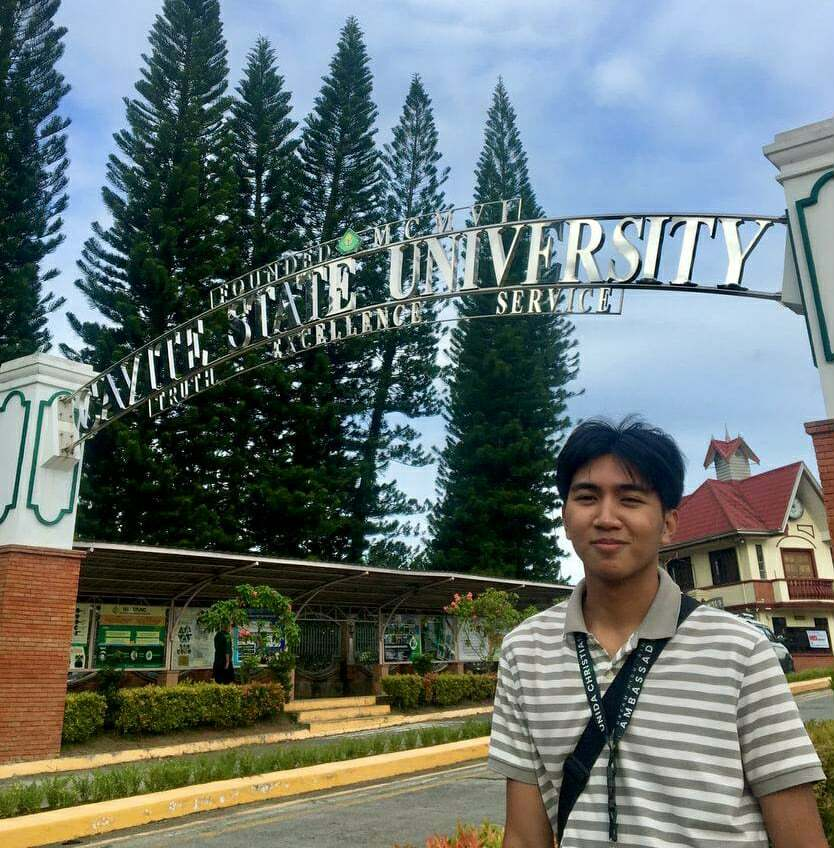
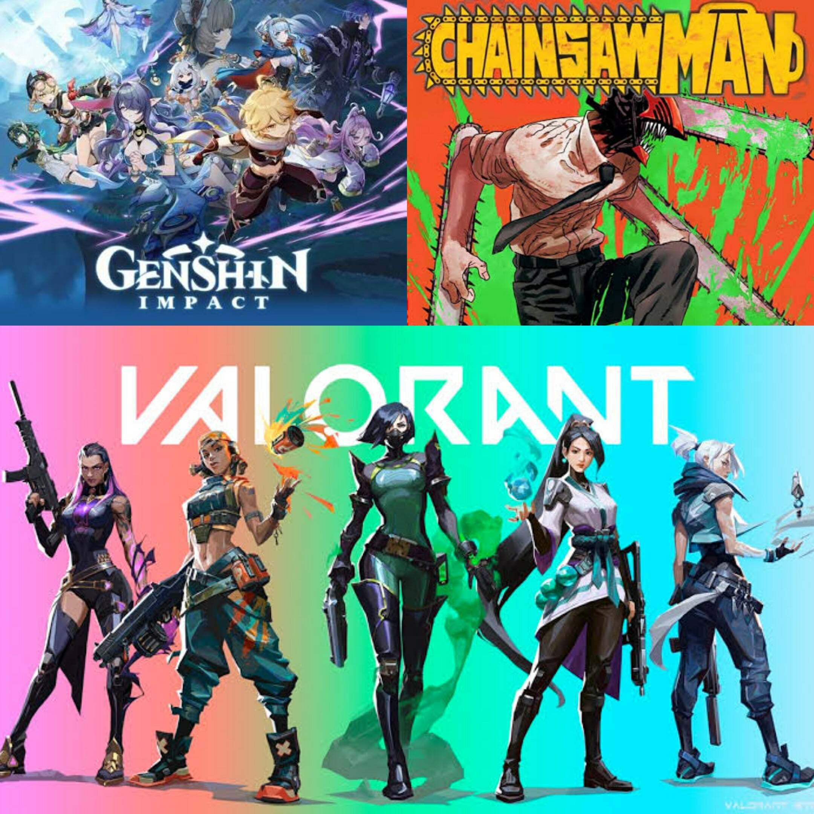
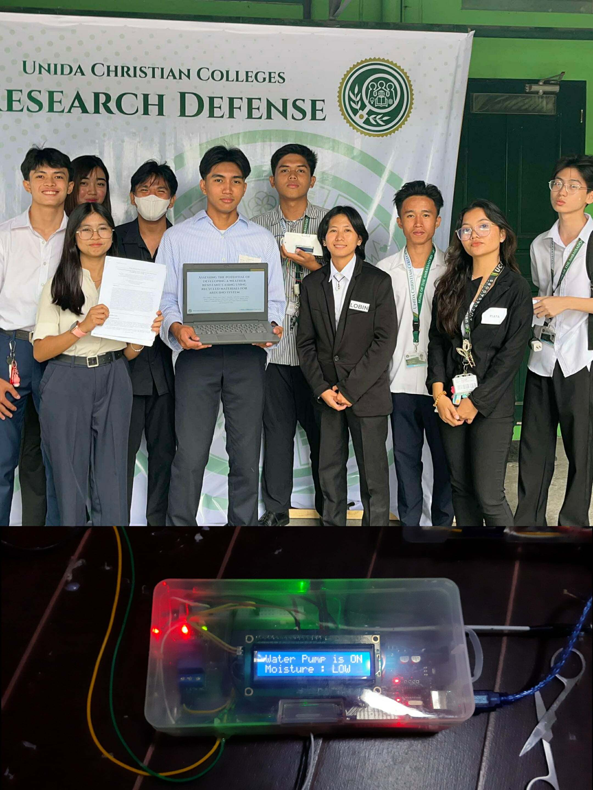

Hi I am Nico Andrei C. Ibañez, 18 years old. Graduated from Unida Christian Colleges
Previous SHS Strand STEM. Currently Studying Computer Science at Cavite State University - Imus. This photo was taken after i verified my requirements at Cavite State University Main
My Favorite Foods Spaghetti and Carbonara and Pizza. Flavor of ice cream is Cookies and Cream i love Coffee and Matcha Milktea.
I Spend my time on things i enjoyed like Eating, Playing Online games like Genshin and Valorant and Sometimes i Watching Anime and Read Manga's like ChainsawMan. im also interested on the field of electronics, i know only the basics.
Senior Highschool Capstone Research Defended
This photo was taken after our Capstone research defense titled Arduino Self-watering system at Unida Christian Colleges february 25, 2025